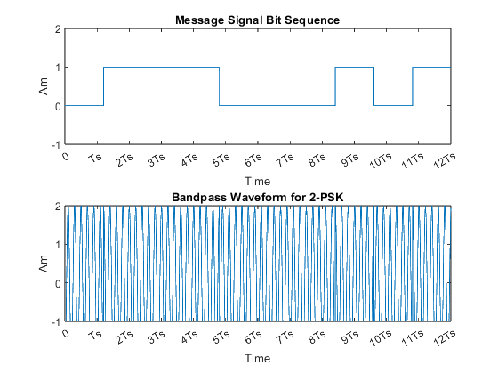

clc;
clear all;
Ts=0.001;
fc=500;
bit_len=12;
M=2;
Am=2;
bit_s=zeros(1,bit_len);
for ib=1:bit_len
if rand<0.5
bit_s(ib)=0;
else
bit_s(ib)=1;
end
end
t=0:0.00001:(bit_len*Ts);
baseband_1=Am*cos(2*pi*fc*t);
baseband_0=-1*Am*cos(2*pi*fc*t);
psk_wave=[];
nbit_seq=[];
for i=1:bit_len
if bit_s(i)==0
psk_wave=[psk_wave baseband_0];
else
psk_wave=[psk_wave baseband_1];
end
nbit_seq = [nbit_seq bit_s(i)*ones(1, length(baseband_0))];
end
subplot(2,1,1)
plot(nbit_seq);
axis([0 (bit_len*(1/Ts)) -1 2]);
xticks([0:(1/Ts):(bit_len*(1/Ts))]);
xticklabels({'0','Ts','2Ts','3Ts','4Ts','5Ts','6Ts','7Ts','8Ts','9Ts','10Ts','11Ts','12Ts','13Ts','14Ts','15Ts','16Ts'})
xlabel('Time');
ylabel('Am');
title('Message Signal Bit Sequence');
subplot(2,1,2);
plot(psk_wave);
axis([0 (bit_len*(1/Ts)) -1 2]);
xticks([0:(1/Ts):(bit_len*(1/Ts))]);
xticklabels({'0','Ts','2Ts','3Ts','4Ts','5Ts','6Ts','7Ts','8Ts','9Ts','10Ts','11Ts','12Ts','13Ts','14Ts','15Ts','16Ts'})
xlabel('Time');
ylabel('Am');
title('Bandpass Waveform for 2-PSK');
